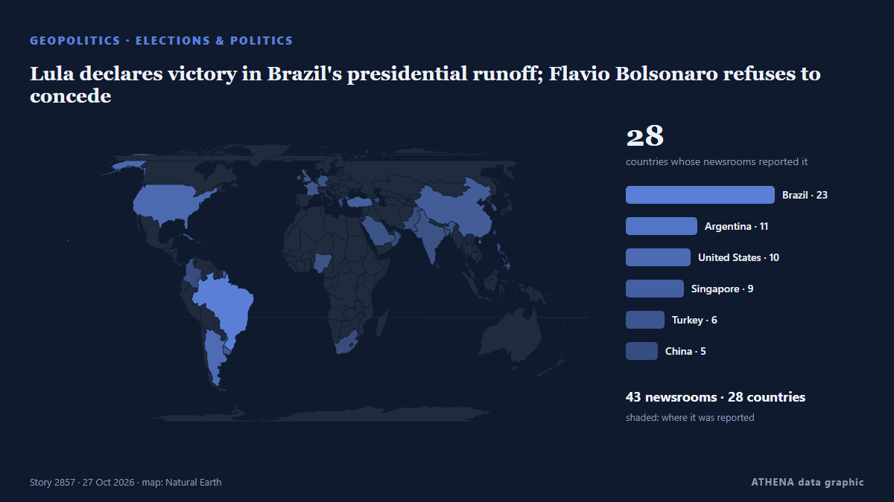

Lula declares victory in Brazil's presidential runoff; Flavio Bolsonaro refuses to concede

Defying opinion poll projections showing Lula in the lead, right-wing senator Flávio Bolsonaro takes lead over incumbent into second-round run-off. von Buenos Aires Times
Unabhängig gemeldet von 43 Medien in 28 Ländern seit dem 5. Okt., zuerst von Buenos Aires Times; die Berichterstattung ist auf dem Höhepunkt. ATHENA stuft das Risiko als mäßig ein (3.0/10), vor allem wegen der Schwere des beschriebenen Schadens und seiner geografischen und sektoralen Reichweite. Die Konfidenz liegt bei 91 % (hoch): 43 Medien bestätigen es unabhängig, bei einer mittleren Verlässlichkeit der Quellen von 76 %. Medien nach Land: Argentinien (9), Brasilien (9), Singapur (5). Berichterstattung: 5. Okt. bis 23. Okt., 439 Stunden.
Warum es wichtig ist: Sicherheits- und diplomatische Entwicklungen können Bündnisse, Handel und Märkte weit über die direkt beteiligten Länder hinaus verschieben.
Was sich geändert hat: 4 neue Berichte von 4 Redaktionen in den 24 Stunden bis 27. Okt..
Erste Schlagzeile: Brazil Poll Has Lula 50.6%, Flávio 49.4%
Schlagzeilen werden auf Englisch angezeigt, wie veröffentlicht.
Auf einen Blick
Ausgewählt, bewertet und geschrieben nach der veröffentlichten Methodik von ATHENA. Kein Redakteur greift in einzelne Ereignisse ein. So entsteht ATHENA ›
| 05 Oct 05:14 UTC | 7 |
|---|---|
| 06 Oct 05:14 UTC | 1 |
| 07 Oct 05:14 UTC | 2 |
| 08 Oct 05:14 UTC | 0 |
| 09 Oct 05:14 UTC | 0 |
| 10 Oct 05:14 UTC | 0 |
| 11 Oct 05:14 UTC | 0 |
| 12 Oct 05:14 UTC | 0 |
| 13 Oct 05:14 UTC | 0 |
| 14 Oct 05:14 UTC | 0 |
| 15 Oct 05:14 UTC | 4 |
| 16 Oct 05:14 UTC | 6 |
| 17 Oct 05:14 UTC | 3 |
| 18 Oct 05:14 UTC | 2 |
| 19 Oct 05:14 UTC | 10 |
| 20 Oct 05:14 UTC | 0 |
| 21 Oct 05:14 UTC | 0 |
| 22 Oct 05:14 UTC | 3 |
| 23 Oct 05:14 UTC | 21 |
| 24 Oct 05:14 UTC | 19 |
| 25 Oct 05:14 UTC | 17 |
| 26 Oct 05:14 UTC | 4 |
| 17 Oct 11:31 UTC | 3.4 |
|---|---|
| 17 Oct 14:01 UTC | 1.6 |
| 24 Oct 02:07 UTC | 2.9 |
| 27 Oct 05:12 UTC | 3.0 |
Warum diese Zahlen
Bedeutung
Risiko
Konfidenz
Die Berichterstattung – wer berichtete, und wann
Schlagzeile wie veröffentlicht · öffnet das Original- Buenos Aires Times · ArgentinienBrazil heads to run-off as Flávio Bolsonaro takes first place finish over Lula
- Buenos Aires Times · ArgentinienFans of Brazil's Lula hope for comeback against Bolsonaro
- Buenos Aires Times · ArgentinienBolsonaro clan wins big in multiple Brazil polls
- Buenos Aires Times · ArgentinienBolsonaro pushes Lula to brink of defeat ahead of Brazil run-off
- Democracy Now! · Vereinigte StaatenFar Right Makes Gains in Brazil as Flávio Bolsonaro Tops Lula in First Round of Presidential Race
- Buenos Aires Times · ArgentinienFlávio Bolsonaro rides right-wing surge into Brazil's election run-off
- Latin America Reports · LATFlávio Bolsonaro edges Lula in Brazil’s closest first-round presidential vote
- Buenos Aires Times · ArgentinienBrazil market euphoria hinges on fixes Flávio Bolsonaro is yet to lay out
- Latin America Reports · LATBrazilian markets rally after right-wing Flavio Bolsonaro leads in presidential first round
- Buenos Aires Times · ArgentinienFlávio Bolsonaro secures four key party endorsements in Brazil race
- The Straits Times · SingapurBrazil’s Bolsonaro racks up endorsements, shaping potential governing bloc
- The Rio Times · BrasilienBrazil Runoff Odds Fall Below 80% for Flávio
- The Straits Times · SingapurBolsonaro, Lula in tight race ahead of Brazil runoff, poll shows
- Buenos Aires Times · ArgentinienNo more '6x1': Brazil's Congress approves shorter workweek
- The Rio Times · BrasilienBrazil Runoff Poll Shows Race Tightening
- Al Jazeera English · KatarLatest poll shows Bolsonaro maintaining edge over Lula in Brazil run-off
- Anadolu Agency (English) · TürkeiNew poll shows narrowing race between Bolsonaro and Lula in Brazil presidential runoff
- The Rio Times · BrasilienPoderData Poll Ties Lula, Flávio at 50%
- Colombia One · KolumbienLula Closes Gap With Flavio Bolsonaro Ahead of Brazil’s Presidential Runoff
- The Rio Times · BrasilienCiro’s Running Mate Backs Flávio Bolsonaro
- MercoPress · UruguayBolsonaro and Lula head into the final stretch of Brazil’s campaign in a statistical tie
- The Rio Times · BrasilienVeritá Poll Puts Flávio at 51%, Lula at 49%
- The Rio Times · BrasilienIpespe Poll Has Flávio 51.2%, Lula 48.8%
- RTÉ News · Irland'Liar,' 'clown': Lula and Bolsonaro spar in Brazil debate
- The Straits Times · Singapur‘Liar’, ‘clown’: Lula and Bolsonaro spar in Brazil poll debate
- DW English · DeutschlandBrazil: Lula, Bolsonaro clash in heated presidential debate
- ABC News (International) · Vereinigte StaatenBrazil's Lula and Flávio Bolsonaro trade barbs in 1st debate only days before presidential runoff
- Daily Maverick · SüdafrikaBrazil’s Bolsonaro, Lula spar in first debate as personal attacks fly
- The Straits Times · SingapurBolsonaro's lead over Lula narrows ahead of Brazil runoff, polls show
- Euronews English · FrankreichLula supporters spell out his name in Rio waters before Brazil runoff
- Buenos Aires Times · Argentinien'Liar,' 'clown' – Lula and Bolsonaro spar in Brazil poll debate
- The Rio Times · BrasilienPoderData Poll Has Flávio 52%, Lula 48%
- Türkiye Today · TürkeiBrazil’s Lula and Bolsonaro clash in debate before runoff
- AzerNews · AserbaidschanPoll shows Lula, Bolsonaro neck and neck
- Taipei Times · TaiwanLula, Bolsonaro trade insults in Brazil poll debate
- The Rio Times · BrasilienPoderData Poll Has Flávio 51%, Lula 49%
- The Straits Times · SingapurFlavio Bolsonaro and Lula about even ahead of Brazil runoff, Datafolha poll shows
- Havana Times · KubaBrazil’s Presidential Runoff: Lula’s Last Remake?
- NPR World · Vereinigte StaatenBrazil's runoff: Lula's legacy vs. Bolsonaro's dynasty
- The Rio Times · BrasilienBrazil Poll Has Lula 50.6%, Flávio 49.4%